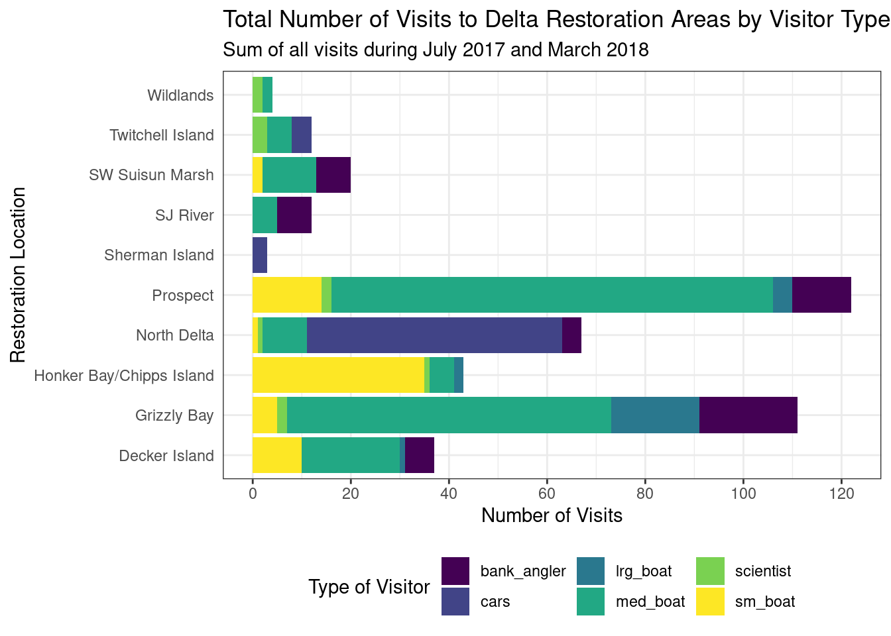

Data Visualization
Set up
Load Data & Clean Names
delta_visits_raw <- read_csv("https://portal.edirepository.org/nis/dataviewer?packageid=edi.587.1&entityid=cda8c1384af0089b506d51ad8507641f")
colnames(delta_visits_raw) [1] "EcoRestore_approximate_location" "Reach"
[3] "Latitude" "Longitude"
[5] "Date" "Time_of_Day"
[7] "sm_boat" "med_boat"
[9] "lrg_boat" "bank_angler"
[11] "scientist" "cars"
[13] "notes" # we have column names that sometimes have capital letters and sometimes don't
# the janitor package can help wit this - will default to the snake format for names
delta_visits <- delta_visits_raw %>%
clean_names()
colnames(delta_visits) [1] "eco_restore_approximate_location" "reach"
[3] "latitude" "longitude"
[5] "date" "time_of_day"
[7] "sm_boat" "med_boat"
[9] "lrg_boat" "bank_angler"
[11] "scientist" "cars"
[13] "notes" Cleaning and organizing data
visit_long <- delta_visits %>%
pivot_longer(cols = c("sm_boat", "med_boat", "lrg_boat", "bank_angler", "scientist", "cars"),
names_to = "visitor_type",
values_to = "quantity") %>%
rename(restore_loc = eco_restore_approximate_location) %>%
select(-notes)Calculate the daily visits by location
daily_visit_loc <- visit_long %>%
group_by(restore_loc, date, visitor_type) %>%
summarize(daily_visits = sum(quantity))`summarise()` has grouped output by 'restore_loc', 'date'. You can override
using the `.groups` argument.Plotting with ggplot2()
ggplot(data = daily_visit_loc,
aes(x = restore_loc,
y = daily_visits)) +
geom_col()
Choosing a different geom_*
daily_visit_loc %>%
separate(date, c("year", "month", "day"), sep = "-") %>%
filter(daily_visits <30,
visitor_type %in% c("sm_boat", "med_boat", "lrg_boat")) %>%
ggplot(aes(x = visitor_type,
y = daily_visits)) +
geom_boxplot()
Customizing our plot
ggplot(daily_visit_loc,
aes(x = restore_loc,
y = daily_visits,
fill = "blue")) + #this is looking for a variable called blue since this was done inside the aes() function
geom_col()
ggplot(daily_visit_loc,
aes(x = restore_loc,
y = daily_visits)) +
geom_col(fill = "blue")
Anything done inside the aes() function is looking for variables in the data. To change the aesthetics of our plot, need to do it outside of the aes() function.
Visualizing our data by another variables
ggplot(daily_visit_loc,
aes( x = restore_loc,
y = daily_visits,
fill = visitor_type)) +
geom_col()
Setting ggplot theme and labeling axes
ggplot(data = daily_visit_loc,
aes(x = restore_loc, y = daily_visits,
fill = visitor_type)) +
geom_col() +
labs(x = "Restoration Location",
y = "Number of Visits",
fill = "Type of Visitor",
title = "Total Number of Visits to Delta Restoration Areas by Visitor Type",
subtitle = "Sum of all visits during July 2017 and March 2018")+
coord_flip() +
theme_bw() +
theme(legend.position = "bottom",
axis.ticks.y = element_blank()) + # removes the ticks from the y-axis
scale_y_continuous(breaks = seq(0, 120, 20)) +
scale_fill_viridis_d()
## saving plot
ggsave("../plots/visits_restore_loc_delta.png", width = 12, height = 6, units = "in")Interactive Visualizations
DT Package for interactive tables
locations <- visit_long %>%
distinct(restore_loc, .keep_all = TRUE) %>%
select(restore_loc, latitude, longitude)datatable(locations)Interactive maps with leaflet
leaflet(data = locations) %>%
addTiles() %>%
addMarkers(lng = ~longitude,
lat = ~latitude,
popup = ~restore_loc)leaflet(locations) %>%
addWMSTiles(
"https://basemap.nationalmap.gov/arcgis/services/USGSTopo/MapServer/WmsServer",
layers = "0",
options = WMSTileOptions(format = "image/png", transparent = TRUE)) %>%
addCircleMarkers(
lng = ~ longitude,
lat = ~ latitude,
popup = ~ restore_loc,
radius = 5,
# set fill properties
fillColor = "salmon",
fillOpacity = 1,
# set stroke properties
stroke = T,
weight = 0.5,
color = "white",
opacity = 1)